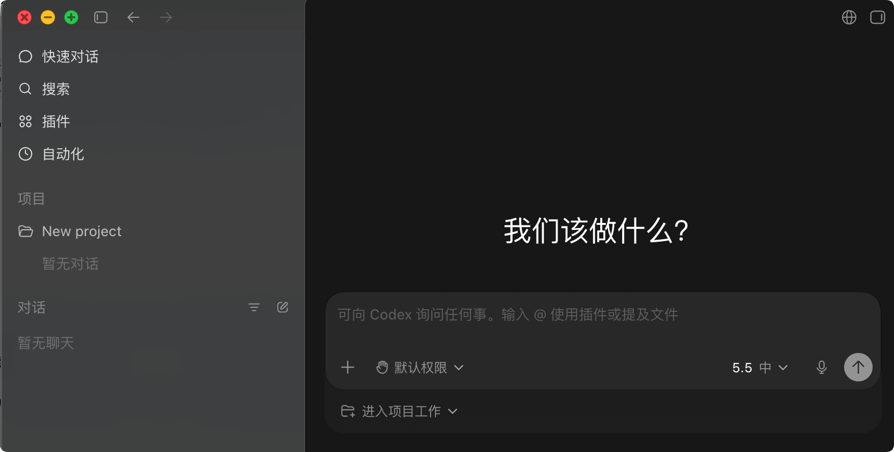
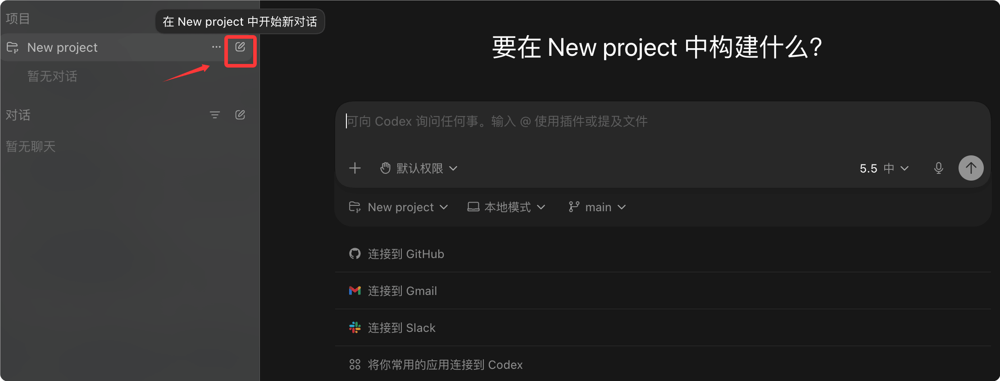
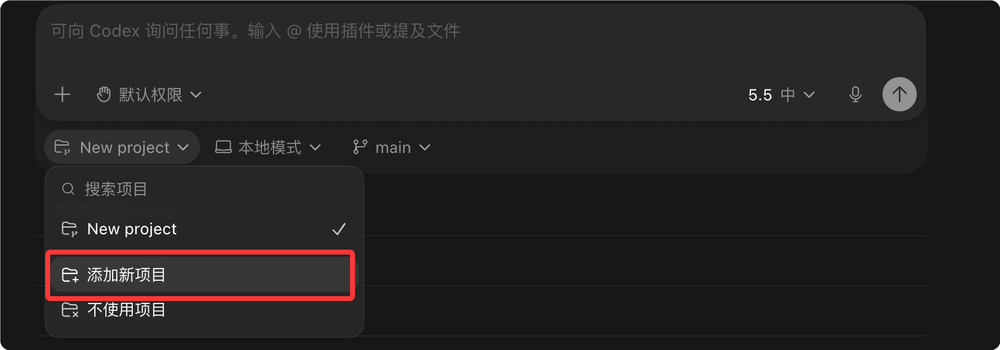
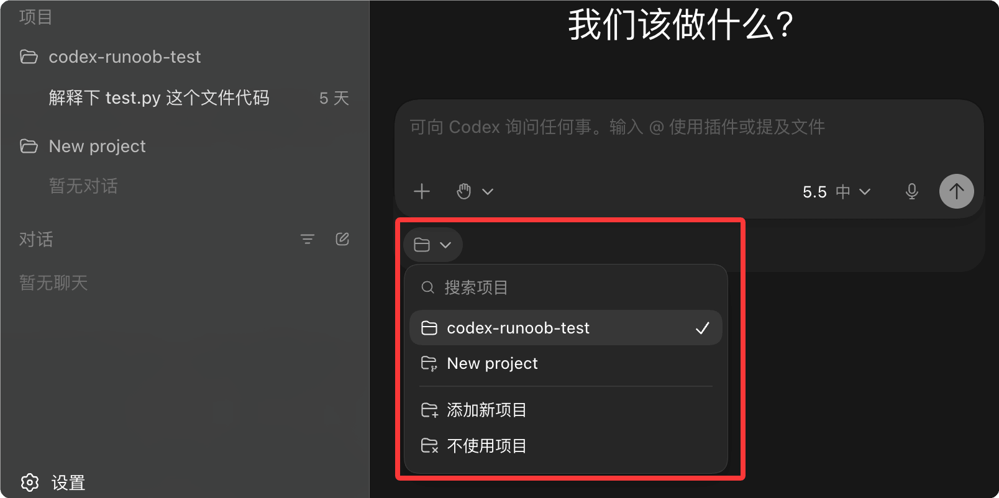
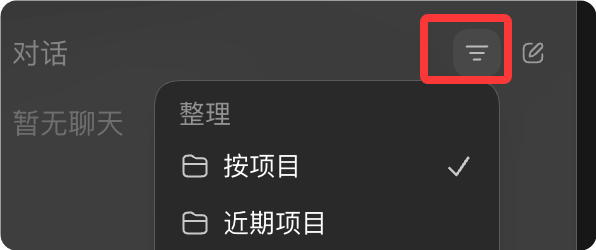
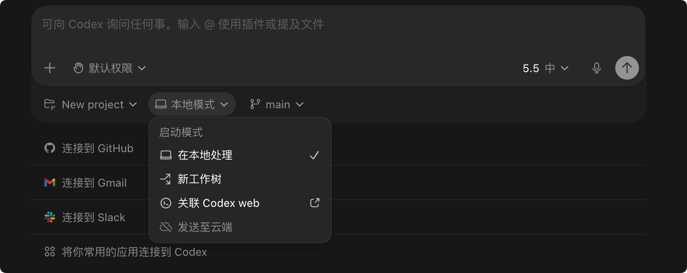
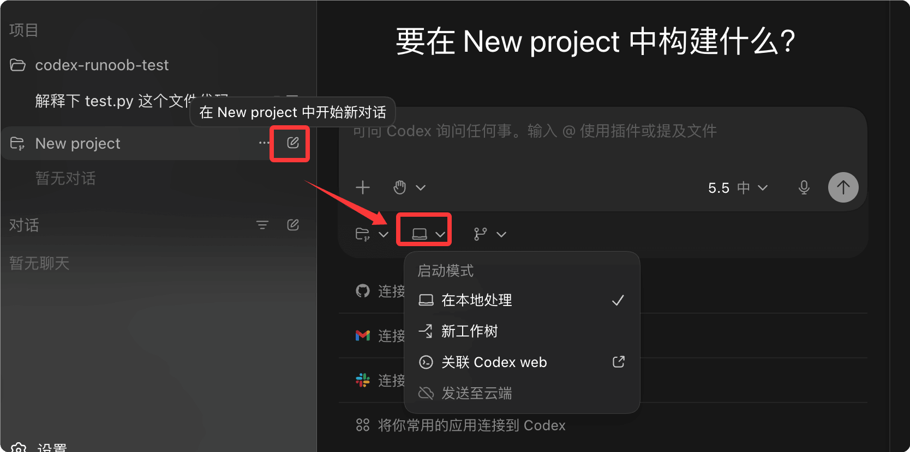

Codex デスクトップアプリ
現在 Codex の主流な利用方法は3つあります：
| 方法 | 対象者 | おすすめ度 |
|---|---|---|
| Web ブラウザ版 | ライトな体験 | ⭐⭐ |
| CLI コマンドライン版 | ヘビーデベロッパー | ⭐⭐⭐⭐ |
| Desktop デスクトップアプリ | 大多数の人 | ⭐⭐⭐⭐⭐ |

Codex App は公式推奨のデスクトップクライアントであり、完全な機能とスムーズなマルチプロジェクト並行体験を提供します。

ダウンロードとインストール
Codex App は macOS（Apple Silicon）と Windows に対応しています。
ダウンロード先：https://chatgpt.com/codex
| プラットフォーム | ダウンロード方法 |
|---|---|
| macOS | 公式サイトからダウンロード、または Homebrew |
| Windows | 公式サイトからインストーラーをダウンロード |

初回利用
インストール完了後、以下の手順で開始します：
1、Codex App を開く
2、ChatGPT アカウントまたは OpenAI API Key でログイン

API Key でログインした場合、一部のクラウド機能が利用できない可能性があります。

3、ログイン成功後の画面は以下の通りです：

使い始めは、まず会話とプロジェクトに注目すれば大丈夫です。会話は通常の ChatGPT のウェブ版と同じようにチャットできます。
プロジェクト（Project）は、ChatGPT のチャット + IDE のプロジェクトディレクトリ + AI Agent の長期記憶を組み合わせたものと理解できます。
プロジェクト（Project）は、あなたのコンピュータ上のフォルダにバインドされ、Codex はこのディレクトリ内でのみ作業します。

ここでは「新しいプロジェクトを追加」を選択して、codex-runoob-test を追加します：

入ると、左右両側にそのプロジェクト名が表示されます。複数のプロジェクトはリストから選択できます：
4、最初のプロンプトを送信して使用開始

インターフェース構成
Codex App には主に以下の領域があります：
| 領域 | 機能 |
|---|---|
| プロジェクトサイドバー | 複数プロジェクトの管理、すばやい切り替え |
| プロジェクトリスト | すべてのセッションを表示、フィルタリングとアーカイブに対応 |
| レビューパネル | Codex が行ったファイル変更を確認 |
| ターミナルパネル | 各プロジェクトに独立した内蔵ターミナル |
| スキルセレクター | カスタムスキルの閲覧と有効化 |
| 領域 | 位置 | 機能説明 |
|---|---|---|
ナビゲーションボタン |
左上隅の戻る/進む矢印 |
履歴セッションやページ間の切り替えに使用します。ブラウザの進む/戻るに似ています。 |
| 新規チャット | 左側メニューの上部 | 具体的なプロジェクトコンテキストに入らずに、一時的な AI チャットをすばやく開始できます。直接の質問、コード説明、コマンド生成などの軽量タスクに適しています。 |
| 検索 | 左側メニュー | 履歴チャット、プロジェクト内容、ファイル、タスク記録を検索します。大規模プロジェクトでは非常に重要で、AI IDE のグローバル検索エントリに相当します。 |
| プラグイン | 左側メニュー | プラグイン機能を管理・呼び出します。例：GitHub、ターミナル、データベース、ファイルシステム、ブラウザツールなどの拡張機能。 |
| 自動化 | 左側メニュー | 自動実行タスクを作成します。例：定期的な日報生成、リポジトリの定期チェック、スクリプトの自動実行、リマインダータスクなど。 |
| プロジェクト（Projects） | 左側中央 | プロジェクトワークスペース管理領域です。各プロジェクトは通常、コードリポジトリ、ディレクトリ、またはワークスペースにバインドされます。 |
| New project | 左側のプロジェクト領域 | 新しいプロジェクトを作成します。作成後は通常、ローカルフォルダ、Git リポジトリ、またはリモートコード環境に関連付けられます。 |
| チャット（Chats） | 左側下部 | グローバルなチャット履歴領域で、プロジェクト外のセッションを管理します。 |
| フィルターボタン | チャットバー右側のじょうごアイコン  |
チャット履歴をフィルタリングします。例：プロジェクト、時間、種類でフィルタリング。 |
| 新規チャットボタン | チャットバー右側の編集アイコン | 新しい独立したチャットプロジェクトを作成します。 |
| メインワークスペース | 中央の黒い領域 | Codex の中心的なインタラクション領域です。AI チャット、コード生成、Agent の実行、ファイル変更結果の表示などを含みます。 |
| 「何をしましょうか？」 | メイン領域の中央 | ウェルカム画面のメッセージで、ユーザーをタスク開始へ導きます。 |
| 入力欄 | 下部中央の大きな入力欄 | Codex に自然言語の指示を入力します。例：コード生成、バグ修正、プロジェクト分析、アーキテクチャリファクタリングなど。 |
| @プラグインのヒント | 入力欄のプレースホルダーテキスト | 対応：@プラグインやツールを呼び出すことができます。例：@terminal、@github、@browserなど。 |
| ファイル言及機能 | 入力欄のプレースホルダーテキスト | ファイルを直接ドラッグ＆ドロップするか、プロジェクトファイルを参照して AI に特定のコードを分析させることができます。 |
| 「+」ボタン | 入力欄の左下 | 添付ファイル、ファイル、画像、または追加コンテキストを追加します。 |
| デフォルト権限 | 入力欄の下部左側 | AI Agent の実行権限を制御します。例：読み取り専用、ファイル編集の許可、コマンド実行の許可など。 |
| モデルセレクター（5.5 内） | 現在使用中のモデルバージョン切り替え領域です。通常、異なる能力レベルのモデルを切り替えられます。 | マイクボタン |
| 入力欄の右下 | 音声入力機能。 | 送信ボタン |
| 入力欄の一番右側にある円形の矢印 | 現在のタスクを Codex に送信します。 | 「プロジェクト作業に入る」 |
| 入力欄の下 | 本格的なプロジェクト Agent モードに入ります。AI は通常のチャットではなく、コードリポジトリ全体に基づいてコンテキストを理解します。 | 地球アイコン |
| 右上隅 | ネットワークまたはリモート接続関連の機能です。オンラインモード、同期、リモート環境などに使用される可能性があります。 | 右上隅のサイドバーボタン |
| 右上隅の長方形アイコン | 右側の追加パネルの表示を制御します。例：ログ、ターミナル、ファイルツリー、Agent ステータスなど。 | 3つの実行モード |
3つの実行モード
モード
| 説明 | 適用シーン | ローカルプロジェクトディレクトリで作業 |
|---|---|---|
| Local | 日常開発、結果を直接確認 | 独立した Git worktree で作業 |
| Worktree | 変更の分離、並行開発 | クラウドの隔離環境で実行 |
| Cloud | リモート委任、並行処理 | モード選択 |

モード選択
：現在のディレクトリで直接作業、変更はすぐに確認可能
- Local：独立したブランチを作成、完了後に Local にマージ可能
- Worktree：タスクはクラウドで実行され、結果は PR またはレポートで提示されます
- CloudWorktree モードは Git worktree 技術を使用し、異なるブランチで同時に作業できます。

Review モード
Review モード
Review モードでは、Codex が行った変更を表示および承認できます。
レビューパネル機能
| 機能 | 説明 |
|---|---|
| Diff 表示 | 全ファイルの変更の詳細な比較を表示します |
| インラインコメント | 特定のコード行にコメントを追加します |
| Chunk 操作 | コードブロックごとに受け入れまたは拒否を選択します |
| 全体をコミット | Git commit を作成するか、変更をプッシュします |
レビュー表示の切り替え
レビューパネルでは、次の2つの表示がサポートされています：
- すべての変更：Codex 以外の変更を含む、プロジェクトの Git ステータスを表示します
- Last turn の変更：直近の Codex の変更のみを表示します
レビュー操作
Cmd + Option + B # レビューパネルの切り替え
Cmd + Shift + P # コマンドメニューを開く
# レビューの流れ
1. ファイルの変更を表示
2. コードブロックをクリックして受け入れ/拒否
3. コメントで説明を追加
4. コミットまたはプッシュ
Automations（自動化）
Automations を使用すると、Codex がバックグラウンドで定期的にタスクを実行するようにスケジュールできます。
使用前提条件。
- Codex App が実行されている
- 選択したプロジェクトがディスク上で利用可能である
自動化の作成
- サイドバーの Automations パネルを開く
- 「New Automation」をクリック
- トリガー頻度とタスクの説明を設定
- サンドボックスモードを設定
自動化の例
| タスク | 説明 |
|---|---|
| スキルの自動作成 | セッションファイルをスキャンし、スキルをより効果的に更新します |
| デイリーブリーフ | 最近のコミットを分析し、変更の要約を生成します |
| Bug 監視 | telemetry エラーを確認し、自動修復を試みます |
自動化タスクの結果は Triage 受信トレイに追加され、結果がない場合は自動的にアーカイブされます。
Worktrees 管理
Codex App には Git worktree サポートが組み込まれています。
Worktree の利点
- 互いに干渉することなく、複数のタスクを並行して処理できます
- メインブランチをクリーンに保ちます
- バックグラウンドでタスクを実行しながら、フォアグラウンドの作業に集中できます
Handoff プロセス
Handoff を使用すると、Local と Worktree を切り替えることができます：
- Worktree でタスクを完了します
- commit と PR を作成します
- Handoff を選択して Local でテストを続行します
Worktree は Git 内のファイルのみを継承し、.gitignore 内のファイルはプロジェクトとともに移動しません。
ローカル環境の設定
Local Environments を使用して、worktree のセットアップスクリプトとよく使う操作を定義します。
設定スクリプト
新しい worktree を作成するときに自動的に実行されるスクリプト：
設定スクリプトの例
npm install # 依存関係をインストール
npm run build # プロジェクトをビルド
Actions（操作）
よく使うタスクを定義し、上部の操作バーからすばやくアクセスします：
| Action | 説明 |
|---|---|
| 開発サーバーを起動 | npm run dev を実行 |
| テストを実行 | テストスイートを実行 |
| コードフォーマット | prettier を実行 |
ショートカットキー
| ショートカットキー | 機能 |
|---|---|
Cmd + Shift + P | コマンドメニュー |
Cmd + N | 新規プロジェクト |
Cmd + Shift + [ / ] | プロジェクトの切り替え |
Cmd + Option + B | レビューパネルの切り替え |
Cmd + J | ターミナルの切り替え |
Ctrl + M | 音声入力 |
Cmd + O | プロジェクトの追加 |
よくある質問
Q: App と CLI/IDE はどう同期しますか？
同じプロジェクトで App と IDE 拡張機能を使用すると、Auto Context とアクティブなプロジェクトが自動的に同期されます。
Q: アーカイブしたプロジェクトはどう見つけますか？
Settings で Archived Threads を表示し、Unarchive を選択して復元します。
Q: Worktree のコードがローカルと異なるのはなぜですか？
Worktree は Git 内のファイルのみを継承します。依存関係のインストールとビルドにはセットアップスクリプトが必要です。
Q: App と CLI のバージョンが異なることで機能に差異はありますか？
バージョンを確認してください：CLI は `codex --version`、App はメニューの About を使用します。
その他の拡張機能
クリックしてノートを共有
ノートは本記事の内容を拡張したものである必要があります！
記事の投稿は、こちらをクリックしてください
登録招待コードの取得方法
ノートを共有する前にログインが必要です！
登録招待コードの取得方法